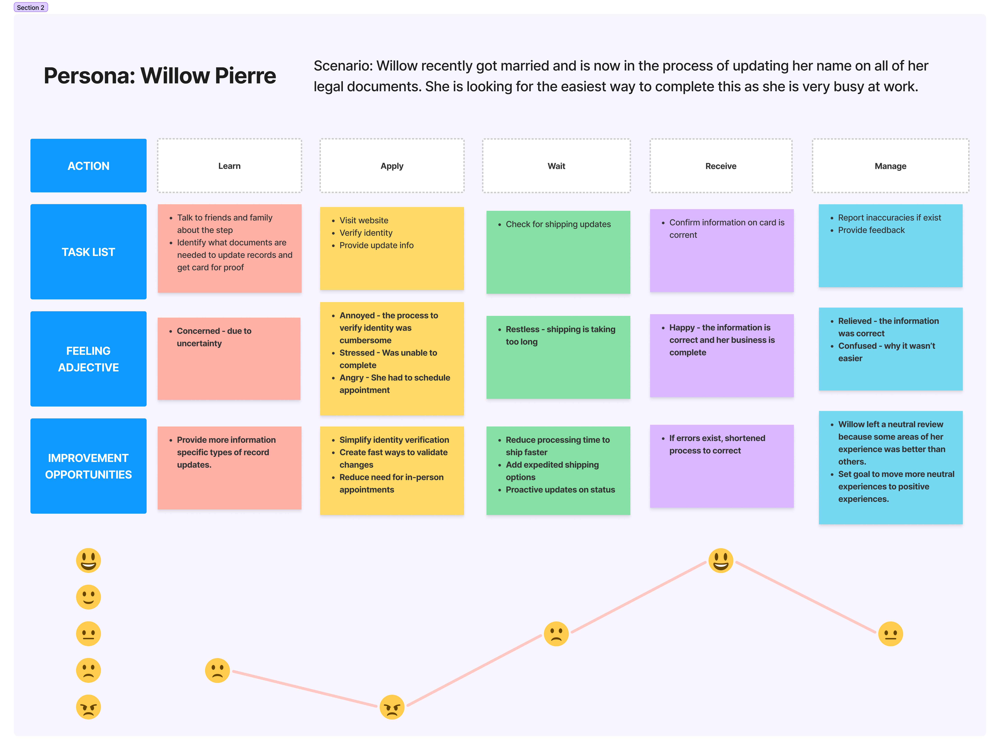

Update Record and Get a Social Security Card
Project Summary
Nearly everyone in America at some point in their life needs a Social Security card. Hundreds of thousands of people each month request Social Security card services. Their reasons may be for proof to work, their child's first card, or a new card with an updated name. The latter often occurs after marriage and was the use case we evaluated for this project. Our capacity to serve these customers in person is no longer viable based on demand and capacity.
Results
Increase in online usage by over 10%. Statistically significant increase in customer satisfaction by 2-3% annually. for
Process
Key Learnings
The ag
Problem Space
Problem
The agency responded to an increasingly high demand for Social Security card services by requiring every customer to schedule an appointment before visiting an office. While this helped staff and offices better manage their time, it often worsened the conditions for customers as they were not well informed and may have already traveled to an office where they were informed they need an appointment.
Problem
This approach did not address the root cause of the problem and the demand for these services was still too high for our staff to process requests timely. The federal government was under a hiring freeze for the foreseeable future.
Goals and Objectives
- Design a process that incorporated changes to the digital products and services so more customers would go online and find success.
- Start collecting feedback from members of the public to inform agency decision-making.
- Close the loop with customers experiencing issues online or with their attempts to obtain service.
- Ongoing communication with customers and employees about their experience throughout their journey life-cycle.
Get to know our users
Willow represents our target audience.
- The majority of our users changing their name identifies as female.
- She was newly married.
- The marriage is the life event that brought her to Social Security.
- Her preferred channel is web due to a busy life style.


User Flow
Our Approach
Detail the user flow steps from the perspective of subject matter experts. We diagrammed the flow to understand how the process aligns to the actual experience we would observe in later research.
Journey Map
Our customer journey map focused on telling an emotional story from Willow’s point of view. We wanted to show how her emotions moved from anger to joy throughout and highlight opportunity areas to improve. We conducted interviews and synthesized open-ended feedback from our Voice of Customer platform – Medallia.
Service Blueprint
In this case, we had to consider multiple touch points and interactions including web, phone, and in-person visits. This blueprint demonstrates the complexities of human interactions within complex systems. We conducted ethnographic studies to understand the behaviors of our customers, employees, and the props they interacted with.

Design Prototype
From our research and analysis we learned the path through the digital card product wasn't as straightforward in real life. There were 5 different product teams working in silos and building disjointed systems. This meant the customer was often left to find their way through a maze of information and poor handoffs between product boundaries.


Conclusion
Understanding the customer’s satisfaction across different journeys and service areas allowed us to map experiences, blueprint interactions, and scope problems to find meaningful solutions. We hosted bi-weekly open office hours to allow product team members, executives, and regional staff to come and ask questions or learn from others' questions.